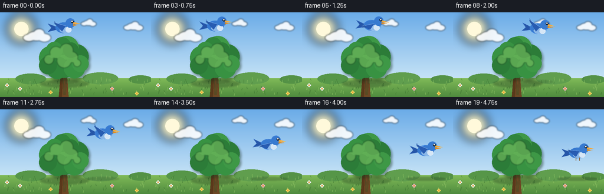
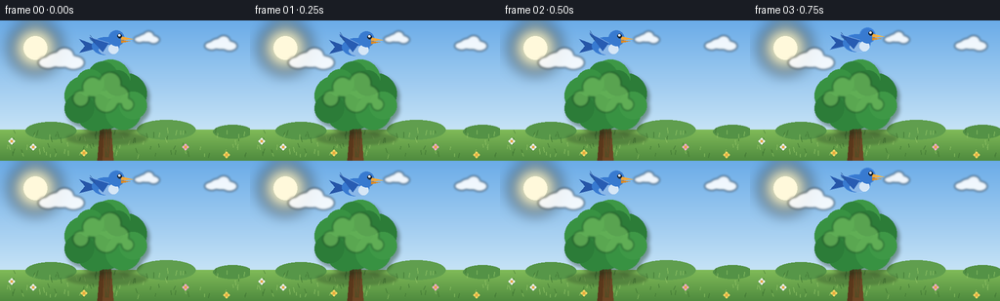

CODING AGENTS AS PIXEL WORLD MODELS
traex/Seed-2.1-Pro-0915 · dynamic_spatial_relationship_0045
点击播放 · 原生 RGB 像素
逐轮保存的候选
回放视频、检查图与代码变化。
每份候选均可单独播放。实际图片检查记录在下方工具轨迹中。
候选 01播放与检查图
点击播放 · 原生 RGB 像素


展开代码变化
--- 上一保存版本
+++ 本次保存版本
@@ -0,0 +1,307 @@
+#!/usr/bin/env python3
+"""T2V: a bird is above a tree, then flies to the right of the tree.
+
+Renders 20 RGB frames (256x144, 4 fps) procedurally with PIL/numpy.
+Everything is drawn at 2x supersampling and downscaled for anti-aliasing.
+"""
+import math
+from pathlib import Path
+
+import numpy as np
+from PIL import Image, ImageDraw, ImageFilter
+
+import artifact_io
+
+WIDTH, HEIGHT, FRAMES, FPS = 256, 144, 20, 4.0
+SS = 2
+W2, H2 = WIDTH * SS, HEIGHT * SS
+HORIZON = 112
+TREE_X = 108
+CANOPY_Y = 82
+START = (108.0, 26.0)
+END = (211.0, 74.0)
+
+rng = np.random.default_rng(7)
+
+
+def overlay():
+ return Image.new("RGBA", (W2, H2), (0, 0, 0, 0))
+
+
+def compose(base, ov):
+ return Image.alpha_composite(base, ov)
+
+
+def build_background():
+ # Sky and grass vertical gradients.
+ arr = np.zeros((H2, W2, 3), dtype=np.float32)
+ sky_top = np.array([107, 172, 232], dtype=np.float32)
+ sky_bot = np.array([198, 227, 246], dtype=np.float32)
+ grass_top = np.array([128, 186, 88], dtype=np.float32)
+ grass_bot = np.array([78, 138, 62], dtype=np.float32)
+ hs = HORIZON * SS
+ ys = np.arange(H2, dtype=np.float32)
+ ts = np.where(ys < hs, ys / hs, (ys - hs) / (H2 - hs))[:, None]
+ sky = sky_top * (1 - ts[:hs]) + sky_bot * ts[:hs]
+ grass = grass_top * (1 - ts[hs:]) + grass_bot * ts[hs:]
+ arr[:hs] = sky[:, None, :]
+ arr[hs:] = grass[:, None, :]
+ bg = Image.fromarray(arr.astype(np.uint8)).convert("RGBA")
+
+ # Sun with soft glow (upper left).
+ ov = overlay()
+ d = ImageDraw.Draw(ov)
+ sx, sy = 36 * SS, 28 * SS
+ d.ellipse([sx - 24 * SS, sy - 24 * SS, sx + 24 * SS, sy + 24 * SS],
+ fill=(255, 243, 190, 230))
+ ov = ov.filter(ImageFilter.GaussianBlur(16 * SS // 2))
+ bg = compose(bg, ov)
+ ov = overlay()
+ d = ImageDraw.Draw(ov)
+ d.ellipse([sx - 12 * SS, sy - 12 * SS, sx + 12 * SS, sy + 12 * SS],
+ fill=(255, 249, 219, 255))
+ bg = compose(bg, ov)
+
+ # Soft clouds.
+ ov = overlay()
+ d = ImageDraw.Draw(ov)
+ for cx, cy, s in [(62, 40, 1.0), (226, 24, 0.7), (150, 18, 0.55)]:
+ for dx, dy, rx, ry in [(0, 0, 16, 8), (-13, 3, 10, 6), (13, 3, 11, 7), (4, -5, 9, 7)]:
+ x, y = (cx + dx * s) * SS, (cy + dy * s) * SS
+ d.ellipse([x - rx * s * SS, y - ry * s * SS,
+ x + rx * s * SS, y + ry * s * SS],
+ fill=(255, 255, 255, 225))
+ ov = ov.filter(ImageFilter.GaussianBlur(1.2 * SS))
+ bg = compose(bg, ov)
+
+ # Distant bushes along the horizon.
+ ov = overlay()
+ d = ImageDraw.Draw(ov)
+ for bx, by, rx, ry, col in [
+ (52, 113, 26, 9, (86, 150, 72)),
+ (170, 112, 30, 10, (96, 158, 78)),
+ (238, 114, 20, 7, (84, 146, 70)),
+ ]:
+ d.ellipse([(bx - rx) * SS, (by - ry) * SS,
+ (bx + rx) * SS, (by + ry) * SS], fill=col + (255,))
+ bg = compose(bg, ov)
+
+ # Grass texture: scattered blades.
+ ov = overlay()
+ d = ImageDraw.Draw(ov)
+ for _ in range(90):
+ x = float(rng.uniform(4, WIDTH - 4))
+ y = float(rng.uniform(HORIZON + 3, HEIGHT - 2))
+ lean = float(rng.uniform(-1.6, 1.6))
+ hgt = float(rng.uniform(2.5, 5.5))
+ col = (62, 116, 50, 160) if rng.random() < 0.5 else (150, 200, 104, 140)
+ d.line([(x * SS, y * SS), ((x + lean) * SS, (y - hgt) * SS)],
+ fill=col, width=SS)
+ # A few small flowers.
+ for fx, fy, petal in [(34, 130, (238, 240, 250)), (86, 136, (245, 214, 96)),
+ (190, 130, (240, 170, 200)), (232, 138, (245, 214, 96)),
+ (12, 124, (238, 240, 250))]:
+ for dx, dy in [(-2, 0), (2, 0), (0, -2), (0, 2)]:
+ d.ellipse([(fx + dx - 1.1) * SS, (fy + dy - 1.1) * SS,
+ (fx + dx + 1.1) * SS, (fy + dy + 1.1) * SS],
+ fill=petal + (255,))
+ d.ellipse([(fx - 1.1) * SS, (fy - 1.1) * SS,
+ (fx + 1.1) * SS, (fy + 1.1) * SS], fill=(232, 168, 60, 255))
+ bg = compose(bg, ov)
+
+ # Soft ground shadow under the tree.
+ ov = overlay()
+ d = ImageDraw.Draw(ov)
+ d.ellipse([(TREE_X - 40) * SS, 115 * SS, (TREE_X + 42) * SS, 127 * SS],
+ fill=(40, 70, 35, 95))
+ ov = ov.filter(ImageFilter.GaussianBlur(3 * SS // 2))
+ bg = compose(bg, ov)
+
+ # Trunk (slightly tapered) with bark hints.
+ ov = overlay()
+ d = ImageDraw.Draw(ov)
+ trunk = [(TREE_X - 4.5, 97), (TREE_X + 4.5, 97),
+ (TREE_X + 8, HEIGHT), (TREE_X - 8.5, HEIGHT)]
+ d.polygon([(x * SS, y * SS) for x, y in trunk], fill=(109, 71, 36, 255))
+ d.polygon([(x * SS, y * SS) for x, y in [
+ (TREE_X - 4.5, 97), (TREE_X - 1.0, 98),
+ (TREE_X - 3.5, HEIGHT), (TREE_X - 8.5, HEIGHT)]],
+ fill=(90, 56, 27, 255))
+ for lx, lean in [(TREE_X - 1.5, 1.0), (TREE_X + 2.5, -1.5), (TREE_X + 5.0, -2.5)]:
+ d.line([(lx * SS, 104 * SS), ((lx + lean) * SS, 140 * SS)],
+ fill=(74, 45, 22, 180), width=SS)
+ bg = compose(bg, ov)
+
+ # Canopy: soft drop shadow clusters, then colored clusters, then highlights.
+ clusters = [
+ (0, 0, 29), (-22, -5, 20), (21, -7, 21), (5, -22, 20),
+ (-11, 12, 19), (18, 12, 18), (-27, 8, 15), (28, 5, 14),
+ (-3, -25, 15), (-16, -18, 14), (12, -18, 13),
+ ]
+ ov = overlay()
+ d = ImageDraw.Draw(ov)
+ for dx, dy, r in clusters:
+ cx, cy = (TREE_X + dx + 2.5) * SS, (CANOPY_Y + dy + 3.5) * SS
+ rr = r * SS
+ d.ellipse([cx - rr, cy - rr, cx + rr, cy + rr], fill=(24, 64, 28, 120))
+ ov = ov.filter(ImageFilter.GaussianBlur(4))
+ bg = compose(bg, ov)
+
+ ov = overlay()
+ d = ImageDraw.Draw(ov)
+ greens = [(48, 133, 60), (56, 146, 66), (44, 124, 56), (62, 152, 70)]
+ for i, (dx, dy, r) in enumerate(clusters):
+ col = greens[i % len(greens)]
+ cx, cy = (TREE_X + dx) * SS, (CANOPY_Y + dy) * SS
+ rr = r * SS
+ d.ellipse([cx - rr, cy - rr, cx + rr, cy + rr], fill=col + (255,))
+ bg = compose(bg, ov)
+
+ ov = overlay()
+ d = ImageDraw.Draw(ov)
+ for dx, dy, r in [(-12, -12, 10), (6, -16, 11), (16, -4, 9),
+ (-24, 0, 8), (2, 2, 12), (24, 6, 6)]:
+ cx, cy = (TREE_X + dx - 1.5) * SS, (CANOPY_Y + dy - 2) * SS
+ rr = r * SS
+ d.ellipse([cx - rr, cy - rr, cx + rr, cy + rr], fill=(120, 190, 96, 150))
+ ov = ov.filter(ImageFilter.GaussianBlur(2))
+ bg = compose(bg, ov)
+ return bg
+
+
+def draw_bird(flap, amp, speed, settled):
+ """Bird facing +x, centered in a fixed-size layer."""
+ layer = overlay()
+ d = ImageDraw.Draw(layer)
+ cx, cy = 60, 44 # center in layer pixels (already 2x)
+
+ def P(x, y):
+ return (cx + x * SS, cy + y * SS)
+
+ def ell(box, fill, outline=None, width=1):
+ x0, y0, x1, y1 = box
+ d.ellipse([cx + x0 * SS, cy + y0 * SS, cx + x1 * SS, cy + y1 * SS],
+ fill=fill, outline=outline, width=width)
+
+ def poly(points, fill):
+ d.polygon([P(x, y) for x, y in points], fill=fill)
+
+ wing_dark = (40, 92, 178, 255)
+ wing_far = (96, 148, 214, 230)
+ body = (56, 122, 208, 255)
+
+ # Tail.
+ poly([(-11, -1), (-27, -7), (-21, 0), (-27, 7), (-11, 3)], (38, 86, 168, 255))
+
+ # Far wing (behind body), slightly out of phase.
+ fy = -3 - flap * 16 * amp
+ poly([(-1, -3), (-15, fy), (-3, 6 - flap * 2 * amp)], wing_far)
+
+ # Body, belly and breast.
+ ell([-14, -9, 14, 9], body)
+ ell([-7, -1, 13, 9], (138, 183, 232, 255))
+ ell([3, -2, 13, 8], (214, 230, 246, 255))
+
+ # Near wing: sweeps from high (upstroke) to low (downstroke);
+ # amplitude eases toward a level glide when settled.
+ tip_y = -3 - flap * 19 * amp
+ wrist_y = 7 - flap * 3 * amp
+ poly([(3, -3), (-17, tip_y), (-3, wrist_y)], wing_dark)
+ # leading-edge highlight
+ s0, s1 = P(3, -3), P(-17, tip_y)
+ d.line([s0, s1], fill=(120, 168, 230, 255), width=SS)
+ # feather separation near the wingtip
+ tx, ty = -17, tip_y
+ for k in (-1, 0, 1):
+ d.line([P(tx + 6, ty * 0.55 + 1 + k), P(tx + 1, ty + k * 2)],
+ fill=(28, 66, 132, 220), width=1)
+
+ # Head and face.
+ ell([3, -16, 19, 0], body)
+ # beak (upper/lower mandible)
+ poly([(16, -10), (28, -7), (16, -6)], (244, 169, 60, 255))
+ poly([(16, -6), (25, -5), (16, -3)], (217, 138, 38, 255))
+ # eye with glint
+ ell([12.2, -12.4, 16.6, -8.0], (24, 38, 54, 255))
+ ell([13.4, -11.6, 15.0, -10.0], (255, 255, 255, 255))
+
+ if settled:
+ # Tiny tucked feet for the final gliding/settled pose.
+ d.line([P(-3, 8), P(-3, 13)], fill=(130, 86, 40, 255), width=SS)
+ d.line([P(3, 8), P(3, 13)], fill=(130, 86, 40, 255), width=SS)
+
+ # Nose-down tilt proportional to flight speed.
+ angle = -7.0 * speed
+ return layer.rotate(angle, resample=Image.Resampling.BICUBIC, center=(cx, cy))
+
+
+def smoothstep(t):
+ return t * t * (3 - 2 * t)
+
+
+def main():
+ bg = build_background()
+ frames = []
+ phase = 0.0
+ prev_ease = 0.0
+ max_step = 0.0
+ # Precompute eased steps to estimate normalized speed.
+ eases = []
+ for i in range(FRAMES):
+ if i < 2:
+ p = 0.0
+ elif i <= 17:
+ p = (i - 2) / 15.0
+ else:
+ p = 1.0
+ eases.append(smoothstep(p))
+ steps = [max(0.0, eases[i] - eases[i - 1]) for i in range(1, FRAMES)]
+ max_step = max(steps) or 1.0
+
+ for i in range(FRAMES):
+ e = eases[i]
+ speed = 0.0 if i == 0 else (e - prev_ease) / max_step
+ speed = min(1.0, max(0.0, speed))
+ prev_ease = e
+
+ x = START[0] + (END[0] - START[0]) * e
+ y = START[1] + (END[1] - START[1]) * e - 16 * math.sin(math.pi *
+ (0.0 if i < 2 else min(1.0, (i - 2) / 15.0)))
+ if i < 2: # gentle hover bob above the tree
+ y += math.sin(i * 0.9) * 1.4
+
+ settled = i >= 18
+ # Flap rate picks up during flight.
+ phase += 0.6 + 2.2 * speed
+ flap = math.sin(phase)
+ if settled:
+ amp = 0.16
+ else:
+ amp = 0.55 + 0.45 * speed
+
+ frame = bg.copy()
+
+ # Bird shadow on the ground (fainter/smaller when higher).
+ proximity = min(1.0, max(0.0, (y - 24) / 86.0))
+ ov = overlay()
+ sd = ImageDraw.Draw(ov)
+ sw = (24 + 18 * proximity) * SS
+ sd.ellipse([x * SS - sw, 115 * SS, x * SS + sw, 121 * SS],
+ fill=(35, 60, 32, int(40 + 70 * proximity)))
+ ov = ov.filter(ImageFilter.GaussianBlur(2))
+ frame = compose(frame, ov)
+
+ bird = draw_bird(flap, amp, speed, settled)
+ frame.alpha_composite(bird, (int(x * SS - 60), int(y * SS - 44)))
+
+ rgb = frame.convert("RGB").resize((WIDTH, HEIGHT), Image.Resampling.LANCZOS)
+ frames.append(np.asarray(rgb, dtype=np.uint8))
+
+ frames = np.stack(frames)
+ case_dir = Path(__file__).resolve().parent
+ artifact_io.save(frames, case_dir)
+ print(f"saved {frames.shape} frames to {case_dir}")
+
+
+if __name__ == "__main__":
+ main()
可观测工具轨迹
实际执行的命令与返回图片。
命令 1exit 0
/bin/bash -lc 'cat prompt.txt; echo "===RULES==="; cat GENERATION_RULES.md; echo "===SPEC==="; cat task_spec.json'
命令 2exit 0
/bin/bash -lc "ls -la; echo \"===\"; find . -name \"artifact_io*\" 2>/dev/null; echo \"===\"; python3 -c \"import numpy, PIL; print('numpy', numpy.__version__); print('PIL', PIL.__version__)\""命令 3exit 0
/bin/bash -lc 'cat artifact_io.py'
命令 4exit 0
/bin/bash -lc 'cd . && python3 generate.py'
保存候选 1 份；完成命令 4 次；可验证图片返回 0 张。原始 API 响应与完整日志保留在本地。